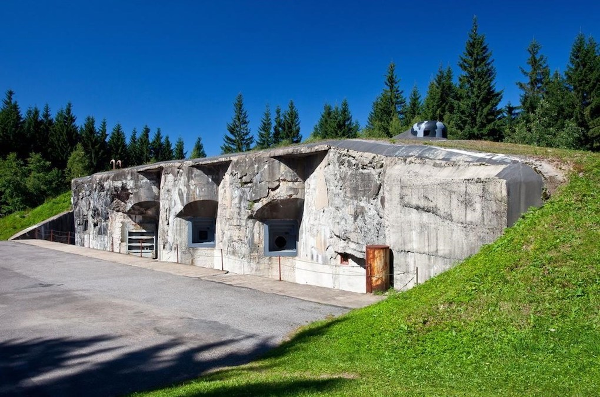

Vojenská tvrz Hanička
Probádejte podzemí jedné z nejznámějších vojenských pevností v Čechách, vydejte se do podzemí vojenské tvrze Hanička, kterou naleznete v srdci Orlických hor. Dělostřelecká pevnost Hanička leží v Orlických horách asi 5 kilometrů od Rokytnice v Orlických horách. Tvrz patří do systému předválečného hraničního opevnění, které bylo budováno v letech 1935 – 1938 na obranu před nacistickým Německem. Pevnost najdeme na samých hranicích s Polskou republikou poblíž stejnojmenné osady. Dnes je tvrz technickou národní kulturní památkou. Komplex se skládá z 6 bojových objektů. Celý areál je propojen rozsáhlým systémem chodeb a sálů. Pevnost Hanička byla zpřístupněna veřejnosti v roce 1995. V současnosti slouží pevnost Hanička jako muzeum pro veřejnost. Pevnost byla stavěna mezi lety 1936 – 1938. Shlédnete prohlídku upravené tvrze, stálou expozici bojové techniky, zbraní a výstroje. Do podzemí sejdete po 98 schodech a prohlédnete si několik vojenských míst. Jeden z objektů s názvem Lom je nejzachovalejším tvrzním prostorem u nás.
Jak se k pevnosti dostanete
k pevnosti Hanička se dostanete autem nebo autobusem, rovněž také pěšky nebo na kole z Rokytnice v Orlických horách. Záchytné parkoviště je u osady Hanička. Od parkoviště se vydáte po červené značce směrem na Anenský vrch. Cesta trvá přibližně 30 minut.